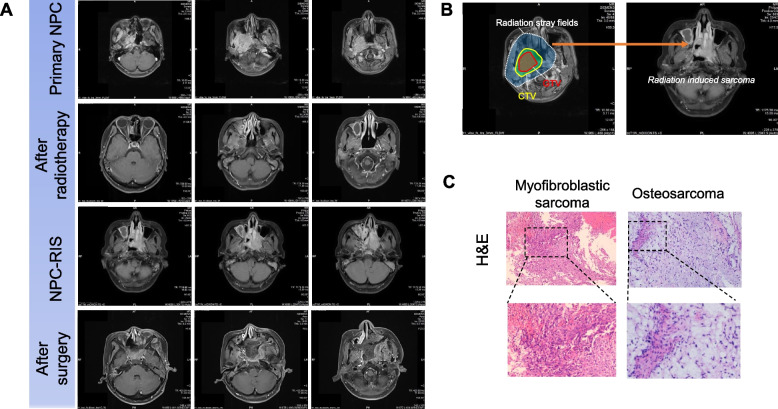
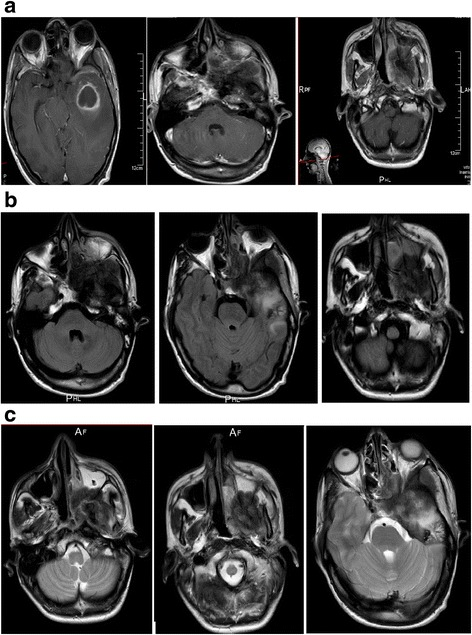

272 — Sarcoma xương nền sọ do xạ / Radiation-induced sarcoma (RIS) of the skull base
Tags: pattern:pha-xuong pattern:u-xuong pattern:mo-mem pattern:trong-truong-chieu pattern:xam-lan-xuong pattern:ngam-thuoc-khong-deu pattern:di-len vung:nen-so vung:so-mat vung:xuong-mat vung:dau-co protocol:CT-xuong protocol:MRI protocol:DWI protocol:PET-CT score:Cahan incidentaloma:khong
Mức chắc chắn (certainty): tổng hợp y văn (literature synthesis) — 1 đoàn hệ 7 ca sarcoma nền sọ sau xạ vòm họng có đối chứng (Peng 2026), 1 tổng quan hệ thống 560 ca sarcoma đầu–cổ do xạ (RISHN 2021), 1 loạt 45 ca osteosarcoma xương hàm sau xạ vòm họng (RIOSM 2016) và 1 ca nguyên văn có ảnh (Echchikhi 2016). Nguyên lý chung của sarcoma do xạ đã có ở 384 — bài này chỉ đi sâu phần nền sọ.
Nguồn có PMCID (tên tác giả đã đối chiếu):
- Peng Z, Shuai M, Zhang L, Wang X, Lu S, Zeng Z, Xiong W, Jiang W, Wang Y, BMC Surg 2026 — PMC13113481, CC BY-NC-ND 4.0.
- Echchikhi Y, Loughlimi H, Touil A, Kebdani T, Benjaafar N, J Med Case Rep 2016 — PMC5133737, CC BY 4.0.
Nguồn chỉ dùng số liệu: Coca-Pelaz A et al., Adv Ther 2021 (PMID 33184778, RISHN 560 ca); Liao LQ et al., Chin J Cancer 2016 (PMID 27729091, RIOSM 45 ca); Kim KS et al., Cancer Res Treat 2016 (PMID 27004955, RIS 15 năm một trung tâm).
Câu chốt: trong vùng nền sọ đã xạ, một khối phá xương mới sau 10–20 năm KHÔNG phải "tái phát vòm họng" cho đến khi chứng minh ngược. Ba con số phải thuộc: (1) sarcoma nền sọ sau xạ vòm họng có sống 2 năm 0% và 5 năm 0% — so với 44,5%/39,1% ở tái phát vòm họng và 93,6%/82,4% ở NPC T3–T4 nguyên phát (Peng 2026); (2) khoảng disease-free 18,3 năm ở sarcoma so với 5,6 năm ở tái phát (p < 0,0001) và tuổi lúc xạ 30,0 vs 45,5 (p < 0,05); (3) ổ sinh u nằm NGOÀI vùng liều cao của khối u nguyên phát nhưng TRONG trường chiếu — vì vậy "cách xa chỗ u cũ" là dấu hiệu ủng hộ sarcoma, không phải dấu hiệu loại trừ.
1. Tổng quan bệnh học – cơ chế hình ảnh
1.1 Vì sao nền sọ là nơi "trả giá" của xạ vòm họng
- Liều cao nhất, xương mỏng nhất, phẫu thuật khó nhất. Phác đồ IMRT vòm họng đưa GTVnx 69,96–73,92 Gy trong 30–33 phân đoạn (2,12–2,24 Gy/phân đoạn), CTV1 60,06 Gy, cổ dự phòng 48–54 Gy (Peng 2026). Nền sọ — thân xương bướm, mỏm chân bướm, xương thái dương — nằm ngay sau vòm họng, nhận liều cao trong thể tích nhỏ nhưng mô xương mỏng, ít mạch.
- Mô xương là mô "sống chậm" nhưng có tế bào gốc trung mô. Tia xạ gây đứt sợi đôi DNA, chọn lọc dòng tế bào mất TP53/RB1, tái sắp xếp nhiễm sắc thể; mô xơ–giảm mạch sau xạ vẫn tiếp tục tái tạo và viêm mạn, tạo vi môi trường thuận lợi cho chuyển dạng trung mô. Vì chu kỳ tái tạo chậm, phải nhiều năm mới đủ đột biến — đây là lý do tiềm tàng 10–20 năm, không phải 1–2 năm.
- TẠI SAO tổn thương "ác tính" trên hình ảnh: sarcoma là mô tế bào dày đặc, giàu mạch, thiếu vỏ → CT thấy khối mô mềm 30–50 HU ngấm thuốc không đồng nhất, phá vỏ xương, phản ứng màng xương, vôi hóa dạng osteoid; MRI thấy T1 thấp, T2 cao không đồng nhất, ngấm thuốc mạnh, hạn chế khuếch tán (ADC thấp do tăng độ đặc tế bào). Xơ hóa sau xạ thì nghèo tế bào, nghèo mạch → T2 thấp, không ngấm, không to lên.
- TẠI SAO "vôi hóa" không loại trừ ác tính: osteosarcoma sản xuất chất nền osteoid — trên CT là các đám vôi hóa mây/không định hình, không phải vôi hóa đều kiểu lành tính. Thấy vôi hóa trong khối phá xương phải nghĩ osteosarcoma, không được gọi là "di tích xơ".
1.2 "Ổ sinh u ở rìa trường chiếu" — điểm khác biệt cốt lõi
- Trong 7 ca sarcoma nền sọ, tất cả khởi phát ở nền sọ, tất cả bệnh nhân ban đầu là T3–T4, và vị trí tổn thương gồm mỏm chân bướm, cơ chân bướm trong, cơ chân bướm ngoài, thân xương bướm. Mô bệnh chủ yếu fibrosarcoma và osteosarcoma (Peng 2026).
- Nghịch lý cần nhớ: trung tâm sinh u nằm ngoài vùng liều cao của GTV nhưng trong trường chiếu (thường ở rìa/vùng liều thấp hơn). Điều này khớp với mô hình "vùng đệm liều trung bình": đủ liều gây đột biến, chưa đủ liều diệt tế bào — và khớp với quan sát tuổi lúc xạ càng trẻ càng nguy cơ.
- Hệ quả thực hành: khi đọc phim theo dõi, không được chỉ nhìn ổ u cũ. Phải quét toàn bộ thể tích đã xạ, đặc biệt rìa trường và các hốc tự nhiên (xoang bướm, hố chân bướm–khẩu cái, hố sọ giữa).
- Phản biện (cửa 3): bài gốc mô tả không thống nhất giữa phần Phương pháp ("ngoài vùng liều cao") và phần Kết quả ("trong hoặc ở rìa vùng liều cao") — có thể do định nghĩa "vùng liều cao" khác nhau (GTV so với PTV). Trong bài này, cách hiểu an toàn là: trong trường chiếu, nhưng không nhất thiết trùng ổ u nguyên phát.
1.3 Số liệu định lượng phải thuộc
| Đại lượng | Con số | Nguồn |
|---|---|---|
| Tần suất sarcoma đầu–cổ do xạ (gộp 64 bài, 560 ca) | 0,15%; liều xạ trung bình 62 Gy; tiềm tàng trung bình 11,1 năm | RISHN 2021, PMID 33184778 |
| Vị trí hay gặp nhất trong RISHN | vùng mũi–xoang; osteosarcoma đứng đầu, rồi fibrosarcoma | RISHN 2021 |
| Tử vong do sarcoma đầu–cổ do xạ | 40,7% chết vì bệnh, trung bình 13,9 tháng sau chẩn đoán | RISHN 2021 |
| Sarcoma nền sọ sau xạ vòm họng | 7 ca; 71% nam; tuổi trung bình lúc chẩn đoán sarcoma 48,2 | Peng 2026, PMC13113481 |
| Tuổi lúc xạ ban đầu | 30,0 (26–62) vs 45,5 (24–75) ở tái phát vòm họng, p < 0,05 | Peng 2026 |
| Khoảng không bệnh (xạ → bệnh mới) | 18,29 năm vs 5,59 năm ở tái phát, p < 0,0001 | Peng 2026 |
| Sống 2 năm / 5 năm | 0% / 0% (sarcoma) · 44,5% / 39,1% (tái phát) · 93,6% / 82,4% (NPC T3–T4) | Peng 2026 |
| Nguy cơ tử vong so với tái phát / NPC nguyên phát | HR 10,66 (p = 0,014) / HR 18,82 (p < 0,001) | Peng 2026 |
| Tần suất RIS sau xạ vòm họng (trích dẫn trong bài) | ~0,16% | Peng 2026 |
| Osteosarcoma xương hàm sau xạ vòm họng | 0,084% (47/53.760); sống 1/2/3 năm 53,3 / 35,6 / 13,5%; tất cả đều tử vong | RIOSM 2016, PMID 27729091 |
| Tỉ lệ cắt được diện mô học âm | 24/39 (61,5%) cắt sạch đại thể; 38,5% còn diện dương | RIOSM 2016 |
| Ca nền sọ đơn lẻ | tiềm tàng 11 năm, hóa trị đơn thuần, tử vong sau 3 chu kỳ | Echchikhi 2016, PMC5133737 |
- Đọc con số cho đúng: "0% sống 5 năm" đến từ 7 ca — không dùng làm tiên lượng cá nhân tuyệt đối, nhưng đủ để nói đây là biến cố gần như luôn tử vong khi không cắt được R0. Con số 0,15–0,16% nghe nhỏ, nhưng nhân với hàng trăm nghìn người sống sót sau xạ vòm họng thì là hàng nghìn ca trên toàn cầu.
2. Mẫu hình + chẩn đoán phân biệt theo vị trí (gamut)
2.1 Mẫu hình hình ảnh
- Khối mô mềm + phá xương, thường bờ không rõ, vùng chuyển tiếp rộng (Lodwick II–III), phá vỡ vỏ xương, phản ứng màng xương (tia/PNT), thành phần trong xương và ngoài xương.
- Chất nền: osteosarcoma → vôi hóa mây/osteoid; chondrosarcoma → vôi hóa vòng cung; fibrosarcoma/UPS → không có chất nền, mô mềm chiếm ưu thế.
- MRI: T1 đồng–thấp tín hiệu, T2 cao không đồng nhất, ngấm thuốc mạnh và không đều, hoại tử trung tâm, DWI hạn chế.
- Vị trí hay gặp sau xạ vòm họng: mỏm chân bướm – hố chân bướm–khẩu cái – thân xương bướm – xoang bướm, lan vào hố sọ giữa, khe ổ mắt, hốc mũi sau.
2.2 Gamut theo vị trí nền sọ
| Vị trí | Gamut chính |
|---|---|
| Thân xương bướm / xoang bướm | Sarcoma do xạ · tái phát vòm họng · di căn xương · chordoma · u màng não en plaque · viêm xương nền sọ |
| Mỏm chân bướm – cơ chân bướm | Sarcoma do xạ (fibrosarcoma) · u lan theo dây V3 · u cơ vân · di căn · hoại tử xương hàm lan lên |
| Xương thái dương / ống tai ngoài | Sarcoma do xạ · ung thư biểu mô ống tai · viêm tai xương chũm · di căn · u hạt |
| Xương hàm trên/hàm dưới | Osteosarcoma do xạ · SCC xương ổ răng · hoại tử xương do xạ (ORN) · viêm tủy xương · di căn |
| Hố sọ giữa / lỗ rách | Sarcoma lan từ nền sọ · u lan theo dây · schwannoma · meningioma |
2.3 Gamut theo hình thái phá xương
- Phá xương + khối mô mềm lớn, tiến triển nhanh → sarcoma, di căn, u lan.
- Phá xương + mảnh xương chết + khí trong mô, không khối → ORN/viêm tủy xương.
- Dày xương + đuôi màng cứng + ngấm thuốc đồng nhất → u màng não do xạ (RIM — bài 264).
- Tiêu xương nhiều ổ, không phản ứng màng xương, bệnh ung thư đã biết → di căn.
- Xương "kính mờ" + vỏ xương dày, không khối mềm → loạn sản sợi (fibrous dysplasia).
3. Bảng so sánh phân biệt (ma trận đối chiếu)
| Thực thể (entity) | Hình ảnh điển hình (CT/MRI) | Chốt vào (rule-in) | Chốt loại (rule-out) | Gợi ý xác nhận |
|---|---|---|---|---|
| Sarcoma nền sọ do xạ (osteosarcoma) | Khối phá xương + mô mềm, vôi hóa mây/osteoid, vùng chuyển tiếp rộng, ngấm thuốc không đều, DWI hạn chế | Trong trường chiếu + tiềm tàng ≥ 5 năm (thường 10–20) + mô học sarcoma khác u cũ + phá xương | Có dày xương đơn thuần + đuôi màng cứng (RIM); mảnh xương chết + khí, không khối (ORN) | Sinh thiết lõi vùng ngấm thuốc; CT xương 0,5–1 mm; MRI + DWI; PET/CT giai đoạn |
| Sarcoma do xạ (fibrosarcoma/UPS) | Mô mềm chiếm ưu thế, ít/không vôi hóa, T2 cao, ngấm mạnh, phá vỏ muộn | Khối mô mềm mới trong trường xạ, không chất nền, mô học trung mô | Có chất nền sụn/xương rõ → nghĩ chondro/osteosarcoma | Sinh thiết + IHC; MRI mô mềm |
| Tái phát ung thư vòm họng | Khối tại đúng ổ u cũ/hố vòm họng, T2 trung tính, ngấm thuốc vừa, ADC thấp, FDG dương | Cùng vị trí u nguyên phát + khoảng không bệnh ngắn (trung vị ~5 năm) + mô học carcinom | Khác vị trí u cũ + tiềm tàng > 10 năm + phá xương/mô học sarcoma → không phải tái phát | MRI + DWI; PET/CT; sinh thiết có IHC (p40/p63 dương ở carcinom) |
| U màng não do xạ (RIM) | Khối ngoài trục dựa màng cứng, ngấm thuốc đồng nhất, dural tail, dày xương dưới u, có thể vôi hóa | Dày xương + đuôi màng cứng + không phá vỏ + mô học meningioma | Phá xương + khối mô mềm + không đuôi màng cứng → không phải RIM | MRI T1FS+Gd; CT xương; theo dõi 6–12 tháng |
| Hoại tử xương do xạ (ORN) | Tiêu xương loang lổ, mảnh xương chết (sequestrum), khí trong mô, dày màng xương, không khối mô mềm thực sự | Đau + lộ xương/khí + tiêu xương trong vùng xạ, không khối | Có khối mô mềm ngấm thuốc, hạn chế khuếch tán, to lên → không phải ORN đơn thuần | CT xương; MRI; CRP/BC; sinh thiết khi có khối |
| Di căn xương nền sọ | Nhiều ổ tiêu xương, không phản ứng màng xương, có thể mô mềm, ngấm thuốc, bệnh ung thư đã biết | Nhiều ổ + bệnh nguyên phát đã biết + tiến triển nhanh | Một ổ đơn độc trong trường xạ, tiềm tàng > 5 năm → nghiêng sarcoma | PET/CT; sinh thiết; xét nghiệm mô học so với u cũ |
| Loạn sản sợi (fibrous dysplasia) | Xương "kính mờ", vỏ dày, không khối mô mềm, bờ rõ, có thể tăng tín hiệu T2 | Kính mờ + vỏ xương nguyên + không phá vỏ + không khối | Phá vỏ + khối mô mềm + hạn chế khuếch tán → không phải loạn sản sợi | CT xương; MRI; theo dõi |
| Viêm tủy xương nền sọ | Tiêu xương + ngấm thuốc màng xương, phù mô mềm, có thể ổ áp-xe, không vôi hóa osteoid | Sốt/đau + CRP tăng + ngấm thuốc lan tỏa, cấy dương | Khối đặc hạn chế khuếch tán + vôi hóa osteoid → không phải viêm | CRP/BC, cấy máu/mô; MRI; sinh thiết nếu không điển hình |

Ba phần của một bài: (A) MRI cùng bệnh nhân qua 4 mốc — u vòm họng nguyên phát, sau xạ, sarcoma nền sọ mới, sau mổ; (B) chồng trường chiếu (đường cam) lên vị trí sarcoma — tổn thương trong trường chiếu nhưng lệch khỏi ổ u cũ; (C) H&E: fibrosarcoma và osteosarcoma. Nguồn: Peng Z et al., BMC Surg 2026 (PMC13113481, Fig. 2), CC BY-NC-ND 4.0 — nguyên bản, không crop.3.1 Ba câu hỏi quyết định trên phim
- Có phá xương thật không? Sarcoma phá vỏ, vùng chuyển tiếp rộng; RIM dày xương, ORN tiêu xương + mảnh chết + khí.
- Có khối mô mềm ngấm thuốc, hạn chế khuếch tán không? Có khối đặc + ADC thấp → phải sinh thiết, không theo dõi.
- Vị trí so với ổ u cũ và trường chiếu? Lệch khỏi ổ u cũ nhưng trong trường + tiềm tàng > 10 năm → sarcoma; đúng ổ u cũ + < 5 năm → tái phát.
4. Protocol chụp + tiêu chuẩn chẩn đoán
4.1 Trình tự hình ảnh
- CT nền sọ có cản quang, cửa sổ xương + mô mềm, lát 0,5–1 mm — đây là modality đầu tay: thấy vôi hóa osteoid, vùng chuyển tiếp, phá vỏ, mảnh xương chết, và mối liên quan với ống thần kinh, lỗ nền sọ, động mạch cảnh trong.
- MRI 3T nền sọ: T1W, T2W, T1FS+Gd (đa bình diện), DWI/ADC, 3D CISS cho dây và màng; đánh giá thành phần mô mềm, xâm lấn hốc mắt – xoang – hố sọ, lan theo dây thần kinh.
- PET/CT FDG để phân giai đoạn và tìm di căn, không dùng đơn thuần để chẩn đoán: ORN, viêm, xơ hóa hoạt động đều có thể tăng FDG; sarcoma độ thấp có thể FDG thấp.
- Sinh thiết lõi dưới CT — lấy vùng mô đặc ngấm thuốc, tránh trung tâm hoại tử, đủ mẫu cho IHC + phân tử; không sinh thiết mù ổ xơ hóa không có khối.
- Đối chiếu phim cũ là bắt buộc: chứng minh tổn thương không có trước xạ (tiêu chuẩn Cahan), và đo tốc độ phát triển.
4.2 Tiêu chuẩn Cahan (1948) và bản sửa đổi
- Sarcoma phát sinh trong trường chiếu xạ (với nền sọ: trong thể tích đã xạ, kể cả rìa trường).
- Khoảng tiềm tàng dài — Cahan gốc yêu cầu ≥ 4 năm, nhiều nhóm hiện dùng ≥ 5 năm; thực tế RISHN trung bình 11,1 năm, sarcoma nền sọ sau NPC 18,3 năm.
- Mô học khác u nguyên phát (carcinom vòm họng → sarcoma trung mô).
- Có bằng chứng mô bệnh học của sarcoma.
- Bản sửa đổi Cahan–Arlen: không có bệnh nền sinh sarcoma (PDB, NF1, retinoblastoma, xạ trị trước đó vì sarcoma) và không phải di căn của u khác.
4.3 Sơ đồ quyết định theo dõi sau xạ vòm họng
flowchart TD
A[Sống sót sau xạ vòm họng, khối mới ở nền sọ hoặc đau/tắc mũi/hẹp hàm] --> B[CT nền sọ 0,5-1 mm có cản quang + MRI 3T: T1, T2, T1FS+Gd, DWI]
B --> C{Có phá xương + khối mô mềm + hạn chế khuếch tán?}
C -->|Không| D{Xơ hóa, dày xương, mảnh xương chết?}
D -->|Dày xương + đuôi màng cứng| E[RIM: theo dõi 6-12 tháng, CT xương định kỳ]
D -->|Tiêu xương + khí + mảnh chết| F[ORN: kháng sinh, chăm sóc, không sinh thiết mù]
D -->|Không bất thường| G[Theo dõi 6-12 tháng, so phim cũ]
C -->|Có| H[PET/CT phân giai đoạn + sinh thiết lõi vùng ngấm thuốc]
H --> I{Mô học sarcoma?}
I -->|Không| J[Tái phát/u khác: điều trị theo mô học]
I -->|Có| K[Đủ tiêu chuẩn Cahan: sarcoma do xạ]
K --> L[Hội chẩn đa chuyên khoa: cắt R0 nội soi mở rộng hoặc mở sọ-mặt, tái tạo, xạ hạt nặng nếu không mổ được]
4.4 Điều trị và theo dõi (ảnh hưởng cách đọc phim)
- Cắt R0 là yếu tố tiên lượng mạnh nhất. Trong sarcoma nền sọ, 6/7 ca được mổ (85,7%), nhưng đường mổ phụ thuộc lan vào hố sọ – hốc mắt – động mạch cảnh; chọn nội soi qua mũi mở rộng hoặc mổ sọ–mặt kết hợp, có định vị neuronavigation, đánh giá diện cắt frozen section, tái tạo bằng vạt niêm mạc cuống mạch/cân đùi (Peng 2026).
- Xạ lại bằng photon rất hạn chế vì liều cộng dồn đã cao; xạ hạt nặng (proton/carbon) là lựa chọn khi không mổ được hoặc còn diện dương, nhờ đỉnh Bragg giảm liều mô lành.
- Theo dõi sau mổ: MRI nền sọ + vòm họng mỗi 3 tháng trong 2 năm đầu, sau đó mỗi 6 tháng; đánh giá diện cắt, tái phát tại chỗ, di căn phổi (Peng 2026).
- Sống còn: RIOSM có 1/2/3 năm 53,3 / 35,6 / 13,5%; sarcoma nền sọ 0% ở 2 năm — nghĩa là chẩn đoán sớm là biến số duy nhất còn can thiệp được.
5. Biến thể bình thường và cạm bẫy
- "Cách xa ổ u cũ" bị đọc là "không thể do xạ": sai. Sarcoma sinh ở rìa trường chiếu, không trùng ổ u; đây là dấu hiệu ủng hộ sarcoma.
- Tiềm tàng quá dài → bệnh nhân rơi khỏi theo dõi. Sau 10–20 năm, bệnh nhân được coi là "khỏi"; khối mới bị quy cho viêm xoang, đau răng, thoái hóa. Cần lịch theo dõi suốt đời ở người sống sót xạ vòm họng.
- Tái phát vòm họng "che" sarcoma: trong theo dõi NPC, mắt chỉ nhìn hố vòm họng; sarcoma ở mỏm chân bướm/xoang bướm nằm ngoài vùng nhìn quen thuộc → satisfaction of search. Luôn quét toàn bộ trường chiếu.
- ORN và sarcoma cùng tồn tại: ORN có thể là nền của sarcoma; khối mô mềm trong ổ ORN phải sinh thiết, không được gọi là "hoại tử".
- PET dương tính giả: viêm xoang, ORN, xơ hóa hoạt động, sau mổ — không chẩn đoán sarcoma bằng PET; và sarcoma độ thấp có thể FDG thấp.
- Sinh thiết trúng hoại tử: kết quả "mô hoại tử, không tế bào" không loại trừ sarcoma; lấy vùng ngấm thuốc ngoại vi, có thể lặp.
- Vôi hóa bị đọc là lành: vôi hóa mây trong khối phá xương = osteoid, không phải di tích xơ.
- Nhầm RIM với sarcoma: RIM dày xương + đuôi màng cứng + ngấm đồng nhất; sarcoma phá xương + khối mô mềm + ngấm không đều. Điều trị khác hoàn toàn (bài 264).
- Artifact kim loại sau mổ/tái tạo: gây tối tín hiệu và "khối giả"; dùng SEMAC/MAVRIC, CT khi cần.
- Xạ lành tính cũng gây sarcoma: đừng bỏ qua tiền sử xạ u máu, nang xương, tuyến giáp khi hỏi bệnh.
6. Tự lượng giá — Blind Quiz
Ca 1 — Nam trưởng thành, 11 năm trước xạ trị ung thư vòm họng (carcinoma không biệt hóa); nay đau đầu, đau mặt, nhìn đôi; MRI thấy khối nền sọ phá xương lan vào hố sọ giữa.

- Gợi ý: không sốt, không chảy mủ; nội soi vòm họng sạch; khối ở mỏm chân bướm–xương thái dương, không đúng ổ u cũ.
- Câu hỏi: Ba chẩn đoán phân biệt? Dấu hiệu nào loại tái phát vòm họng? Bước tiếp theo?
Bấm để hiện đáp án (findings + chẩn đoán)
- Findings: khối phá xương bướm và phần vảy xương thái dương, thành phần mô mềm lan vào hố sọ giữa, tín hiệu T1 thấp – T2 cao không đồng nhất, ngấm thuốc mạnh không đều, có ổ hoại tử; không có đuôi màng cứng.
- Chẩn đoán: sarcoma xương nền sọ do xạ (osteosarcoma) — tiềm tàng 11 năm, khác vị trí u vòm họng nguyên phát.
- Phân biệt: tái phát vòm họng (loại: khác vị trí, phá xương, tiềm tàng dài, không khối ở hố vòm họng), RIM (loại: không dày xương/không đuôi màng cứng), ORN (loại: có khối mô mềm đặc, không mảnh xương chết/khí).
- Bước tiếp theo: sinh thiết lõi vùng ngấm thuốc (không lấy trung tâm hoại tử) + PET/CT phân giai đoạn + hội chẩn nền sọ; không chờ theo dõi.
- Nguồn ảnh: Echchikhi Y et al., J Med Case Rep 2016 (PMC5133737, Fig. 1), CC BY 4.0.
Ca 2 — Bệnh nhân trong đoàn hệ sarcoma nền sọ: xạ vòm họng nhiều năm trước; phát hiện khối mới khi MRI theo dõi định kỳ, chưa có triệu chứng mới.
- Gợi ý: bệnh nhân không triệu chứng mới; phát hiện khi chụp định kỳ; khối nằm lệch khỏi hố vòm họng, sát mỏm chân bướm.
- Câu hỏi: Mốc nào tổn thương mới xuất hiện? Vì sao khối này không phải tái phát? Cần làm gì trước khi mổ?
Bấm để hiện đáp án (findings + chẩn đoán)
- Findings (panel A): hàng 1 = NPC nguyên phát; hàng 2 = sau xạ, u teo và xơ hóa; hàng 3 = sarcoma nền sọ mới (khối phá xương, xâm lấn cơ chân bướm, lan hố sọ giữa); hàng 4 = sau mổ, khoang mổ và tái tạo.
- Vì sao không phải tái phát: khối không nằm ở hố vòm họng, mà ở mỏm chân bướm/thân xương bướm; tiềm tàng nhiều năm; mô học sarcoma (panel C) khác carcinom vòm họng.
- Trước khi mổ: sinh thiết xác nhận mô học, PET/CT loại di căn, CTA/MRA đánh giá động mạch cảnh trong và xoang hang, đánh giá thính lực/thị lực/dây sọ, hội chẩn đa chuyên khoa.
- Bài học: theo dõi định kỳ bằng MRI toàn trường chiếu phát hiện được sarcoma trước triệu chứng — đây là cơ hội duy nhất để cắt R0.
- Nguồn ảnh: Peng Z et al., BMC Surg 2026 (PMC13113481, Fig. 2A và 2C), CC BY-NC-ND 4.0.
Ca 3 — Cùng bệnh nhân Ca 2: bản đồ liều cho thấy khối mới nằm ở đâu so với trường chiếu?
- Gợi ý: đường cam = trường chiếu; vùng đỏ = PTV liều cao; vùng xanh = CTV.
- Câu hỏi: Vị trí ổ sarcoma so với tâm u cũ và so với trường chiếu? Điều này gợi ý gì về cơ chế?
Bấm để hiện đáp án (findings + chẩn đoán)
- Findings (panel B): ổ sarcoma nằm trong trường chiếu nhưng lệch khỏi tâm u nguyên phát, ở vùng liều trung bình–thấp hơn (rìa PTV/CTV).
- Ý nghĩa cơ chế: khớp mô hình "vùng đệm liều" — đủ gây đứt DNA và bất ổn định gen nhưng không đủ diệt tế bào, nên tế bào trung mô sống sót tích lũy đột biến trong nhiều năm.
- Hệ quả lâm sàng: không được chỉ đọc ổ u cũ; phải đọc toàn bộ thể tích đã xạ, đặc biệt rìa trường và các hốc lân cận.
- Lưu ý: "ngoài vùng liều cao" không đồng nghĩa "ngoài trường chiếu" — đây là câu dễ hiểu sai nhất khi đọc bài gốc.
- Nguồn ảnh: Peng Z et al., BMC Surg 2026 (PMC13113481, Fig. 2B), CC BY-NC-ND 4.0.
Bài liên quan chéo
- 200 – Tổng quan Hệ Thần kinh
- 264 – U màng não do xạ (RIM) (cùng trường chiếu, dày xương thay vì phá xương)
- 384 – Sarcoma do xạ sau xạ trị ngực (nguyên lý chung RIS, Cahan, sinh thiết)
- 253 – Viêm xương nền sọ giữa không do tai
- 269 – Xạ lại tủy sống (ngưỡng liều cộng dồn khi cân nhắc xạ lại)
- 330 – Tiếp cận u xương và "don't touch"
- 204 – Hoại tử phóng xạ sau xạ trị u não
Ảnh
272_sarcoma-nen-so_MRI_PMC13113481.jpg— Fig. 2: (A) chuỗi MRI 4 mốc từ NPC nguyên phát → sau xạ → sarcoma nền sọ → sau mổ; (B) tương quan trường chiếu và ổ sarcoma; (C) H&E fibrosarcoma và osteosarcoma (Peng Z et al., BMC Surg 2026, PMC13113481, CC BY-NC-ND 4.0, nguyên bản, không crop).272_osteosarcoma-nen-so_MRI_PMC5133737.jpg— Fig. 1: MRI khối xâm lấn xương bướm và xương thái dương, tín hiệu không đồng nhất, ngấm thuốc (Echchikhi Y et al., J Med Case Rep 2016, PMC5133737, CC BY 4.0).
Không dùng để chẩn đoán độc lập khi chưa có người hướng dẫn.